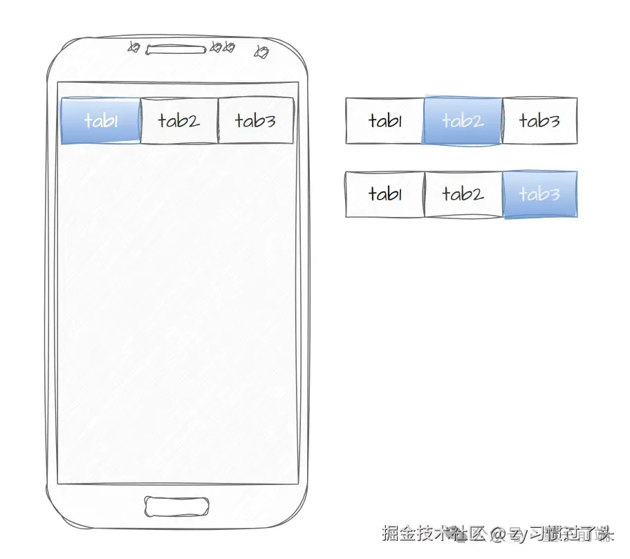

图片预加载场景
本篇文章只讨论用户在界面上的某种交互行为后，需要加载并显示新的图片资源的应用场景。
例如：在做移动端开发时，尤其是 H5 活动页，难免会遇到一些花里胡哨的 Tab，这个时候 UI 同学往往会给前端开发者提供若干张不同高亮 Tab 的图片，用户在点击 Tab 不同位置时，前端开发者需要切换对应 Tab 容器的背景图。
有的同学可能会问，在这种场景下，我们没做图片预加载，好像也没什么问题，是否有点大题小作？
这个时候我们需要探讨一下图片预加载的原理和意义。
原理：提前下载将来需要的图片资源，让浏览器持有图片资源的缓存，将来需要使用对应图片资源时直接从缓存中获取即可
意义：图片无缝加载显示，更好的用户体验
因此，如果不做图片预加载也不会有太大的问题，只是用户在第一次切换 Tab 时，需要先下载对应的图片资源再进行显示，在页面上可能就会有闪一下再显示 Tab 的效果，一定程度上会影响用户体验。但是，用户二次切换同一 Tab 时，由于之前已经切换过一次，因此浏览器同样持有了图片资源的缓存，后续的用户体验还是非常好的。
日常前端开发中，需要图片预加载的场景还有很多，本文就不一一列举，接下来我们一起来实现一个相对优雅的图片预加载功能
图片预加载实现
图片预加载的具体实现方式很多，本篇文章只探讨最常见和易理解的实现，并在其基础上进行相对优雅的优化处理。
我们可以通过 JavaScript 创建一个新的 Image 对象，并将图片的 Url 赋值给它的 Src 属性，这样图片就会开始加载。
function preloadImages(urls) {
urls.forEach((url) => {
const img = new Image();
img.src = url;
});
}
preloadImages(["image1.jpg", "image2.jpg", "image3.jpg"]);
我们需要明白我们上述所说的图片预加载的意义，本质上是为了更好的用户体验。但是，如果我们直接使用上述代码，在页面初始化时就进行图片预加载，这个时候会一定程度上影响我们首屏的渲染速度以及用户的首屏体验。
因此，图片预加载代码执行的时间点是我们需要思考的问题。
本篇文章推荐两种方式，考虑使用 window.onload 或 requestIdleCallback ，将图片的预加载操作推迟到页面及所有依赖资源加载完成或浏览器空闲时间时进行。这样可以确保页面的关键内容（首屏内容）优先渲染，避免阻塞用户的首屏体验。
详细了解 API：Window：load 事件、requestIdleCallback
function preloadImages(urls) {
urls.forEach((url) => {
const img = new Image();
img.src = url;
});
}
if ("requestIdleCallback" in window) {
requestIdleCallback(() => {
preloadImages(["image1.jpg", "image2.jpg", "image3.jpg"]);
});
} else {
// 如果浏览器不支持 requestIdleCallback，则使用 window.onload 事件作为后备方案
window.addEventListener(
"load",
(event) => {
preloadImages(["image1.jpg", "image2.jpg", "image3.jpg"]);
},
{
once: true, // 细节，调用一次后，自动移除事件处理函数
}
);
}
不知道兄弟们怕不怕麻烦，反正我怕麻烦。那如果我有很多张图片都需要预加载，一个一个导入图片路径不得麻烦死了。
因此，我们希望有一种约定式的方式，来简化这个导入操作。
譬如，我们希望项目工程目录的 assets/img 文件夹下以及子文件夹下的 pre-开头的图片资源，都能被自动预加载。
本篇文章推荐使用 require.context() 来分析满足上述约定的所有图片，并拿到文件路径数组（前提：项目构建工具选用的是 webpack）
详细了解 API：require.context()
function autoPreloadImages() {
// 使用 require.context 动态获取指定文件夹及其子文件夹下的所有图片
// require.context(目录, 是否递归, 匹配文件的正则表达式)
const files = require.context('../../assets/img', true, /^./.*pre-.*.(png|jpe?g|gif|webp)$/i);
// 调用 files.keys() 获取匹配的文件路径数组，并通过 files(key) 获取每个文件的实际 URL
const urls = files.keys().map(key => files(key));
// 检查浏览器是否支持 requestIdleCallback 方法
if ('requestIdleCallback' in window) {
requestIdleCallback(() => {
preloadImages(urls);
});
} else {
// 如果浏览器不支持 requestIdleCallback，则使用 window.onload 事件作为后备方案
window.addEventListener('load', event => {
preloadImages(urls);
});
}
// 定义图片预加载函数
function preloadImages(urls) {
urls.forEach(url => {
const img = new Image();
img.src = url;
});
}
}